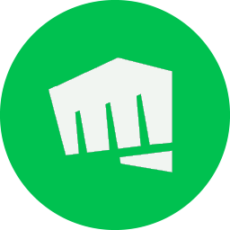

Riot PlusTR / ENTalon
Orman için ilk tercihin
Dereceli tek/çiftOrman, yedek Orta
LoL açık, lobidesin. Ping 5 ms, kayıp yok.
Şampiyon seçimi
Kabul
Maç bulununca kabul ederim
Sorun mu var?
Ekrana gelmiyor1
Yükleme ekranında kaldı2
LoL'ü aç3
Hepsini kapat4
LoL açıldı, 12 saniye sürdü. İyi oyunlar.